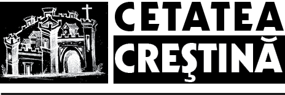
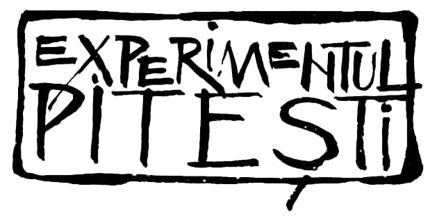

Înainte de a face analiza celor petrecute în închisorile Pitești, Gherla, Târgu-Ocna, țin să fac următoarele precizări. Sunt unul dintre cei 3 sau 4 supraviețuitori care, trecând prin demascări și așa-zisa reeducare, poate aduce precizări și în ceea ce privește ultima înscenare a Securității, din 1957, cu care s-a încheiat acest lung șir de crime, printr-un așa-zis proces al autorilor morali ai reeducării. De asemenea, pentru o mai clară înțelegere a dimensiunii acțiunilor din închisorile amintite, am tratat această problemă în modul cum a fost abordat comunismul în volumele Holocaustul Roșu (1992 și 1998) ale domnului Dr. Florin Mătrescu.
Analiza celor petrecute în închisorile Pitești, Gherla, Canal, Tg. Ocna, Târgșor, în perioada 1949-1952 nu poate fi desprinsă de tot ceea ce s-a petrecut în răsăritul Europei din 1917 în Rusia și din 1944 în statele predate U.R.S.S.-ului.
Pentru a putea prezenta și înțelege factorii care au stat la baza acestor „acțiuni”, este necesar a puncta cu câteva citate caracteristicile fundamentale ale teoriei și practicii marxist-leniniste și anume: violența și teroarea mergând până la criminalitatea organizată la nivel de stat:
V.I. Lenin: Voi ne-ați provocat în octombrie la luptă, la această provocare noi vă răspundem cu teroare, cu o întreită teroare; iar dacă va fi nevoie vom recurge la o și mai aspră teroare (V.I. Lenin, Gesammelte Werke — traducerea în limba germană, ed. a 4-a, 1952, vol. XXXII, p. 193).
Ilya Ehrenburg scria în foaia sa volantă intitulată Ucide (101): Nemții nu sunt oameni. Noi nu vom vorbi, noi vom omorî! Ucide pe nemți! Nu te sfii, ucide!!
Generalul ceh Ingr: Când va veni ziua noastră, întreaga națiune va urmări strigătul de război al husiților: Lovește-i, ucide-i, nu lăsa pe nimeni în viață! (13 Nov. 1944 BBC)
Citatele pot fi mult mai multe și toate converg către aceleași acțiuni de teroare. Vom mai reveni pe parcursul expunerii.
Răsăritul a fost incontestabil „teatrul unui experiment”, iar Piteștiul un segment al acestuia. El a fost un „Laborator”, ale cărui rezultate și metode trebuiau extinse în toate închisorile, apoi în întreaga țară. Dar, în același timp, Piteștiul a reprezentat și un fenomen. El a cuprins, la cele două extremități ale sale, rezultatul efectului maxim la care se poate ajunge prin exercitarea unei terori permanente și îndelungate, fizice și psihice în același timp, după un minuțios și științific program. La un capăt s-a produs o dezumanizare totală printr-o degradare psihică, morală și fizică a elementului asupra căruia s-a acționat, iar la celălalt capăt rezultatul torturii a fost martirajul. Sfinți și mucenici pe de o parte, monștri pe de alta. Între cele două extreme s-au manifestat toate posibilitățile de comportament uman în fața terorii și torturii maxime și continue.
Acolo s-a experimentat acel principiu materialist: acumulări lente cantitative duc la salturi bruște calitative. Rezistența umană acumulând cantități uriașe de tortură poate ajunge într-un moment dat la o clipă când cel torturat cedează psihic, moral și fizic, transformându-se din victimă în călău — cum se cerea de cel care îl tortura. Astfel s-au putut produce mutații psihice asemănătoare schimbării stării de agregare a materiei, când un metal sau un lichid se transformă în lichid sau gaz, din momentul în care atinge punctul critic. Oameni care, în condiții normale de existență, au dat dovadă de acte cu adevărat eroice, acum, supuși torturilor și presiunilor psihice permanente, timp de luni de zile sau ani, s-au transformat în neoameni. Unii, din fericire puțini — dacă aceasta se poate numi așa — nu și-au mai putut reveni niciodată, părăsind această viață tot în condiții tragice oferite de cei care îi folosiseră. Mă refer la cei care în Cazimca de la Jilava, unde, zidiți de vii în celule construite special de criminalul regim, și-au aflat sfârșitul din această lume, rămânând în judecata Celui de Sus, după ce fuseseră folosiți ca martori falși. Dar și la cei care în urma torturilor de la Pitești nu au rezistat, o parte din ei — dar nu cei mai vinovați sau mai exact nu singurii vinovați — fiind preluați de Securitate în anchete după 1952 și au clacat. Acestora Securitatea le aplică un diabolic și criminal regim de tortură, determinându-i să afirme că atrocitățile comise în închisori s-au făcut din ordin legionar. Apoi îi trimite în fața plutonului de execuție.
Citez în sprijinul celor mai sus afirmate câteva fraze din Procesul Verbal de Interogatoriu luat deținutului Juberian Constantin la data de 28 ianuarie 1954.
Întrebare: — Ai fost forțat de cineva să te sinucizi? Prin faptul că nu ți se pun în sarcină fapte ce nu-ți aparțin, cât și prin faptul că nu ai fost întrebat decât despre faptele criminale pe care le-ai săvârșit, dovedește că încercarea de a te sinucide ai făcut-o tocmai în scopul de a nu răspunde cinstit în fața organelor de anchetă și a ascunde atât faptele tale cât și pe ale altora de aceeași categorie cu tine! Așa a fost treaba?
Răspuns: — Prin încercarea mea de a mă sinucide nu am căutat să ascund faptele mele și nici pe ale altor elemente împreună cu care am activat, și această încercare de sinucidere am făcut-o pentru a termina cu viața.
Câtă tortură fizică și psihică s-a putut acumula de-a lungul anchetelor în ființa și conștiința acestui om ca să încerce să-și pună capăt zilelor?!
Continuând analiza celor petrecute în închisorile amintite, apelând din nou la origine, adică la esență și anume la aparatul de teroare cel mai sângeros din istoria lumii, se pun întrebările firești, valabile atât pentru Experimentul comunist, cât și pentru Laboratorul său, Pitești, și anume:
- Cine a conceput satanicul experiment?
- Cine au fost autorii proiectului?
- Cine au fost executanții?
- Cine au fost sprijinitorii din umbră?
- Cine au fost colaboratorii?
- Cum s-au recrutat victimele și călăii?
- Care a fost scopul organizării unui asemenea experiment?
Pentru a putea răspunde la primele două întrebări începem prin a face câteva precizări.
Sistemul comunist ultracentralizat nu permitea inițiative personale, totul desfășurându-se într-o perfectă respectare a ierarhiei și a unei discipline oarbe; nimeni nu executa nimic fără ordin, iar după executare urmează raportarea în amănunțime asupra aducerii la îndeplinire a acestuia.
După 1945 țara noastră s-a bucurat de o dublă guvernare, care în esență era una singură.
Guvernul și conducătorii marilor instituții centrale, în calitate de simpli executanți, pe de o parte și consilierii sovietici care îi dublau la toate nivelele, pe de altă parte. Aceștia din urmă transmiteau directivele primite de la Moscova și vegheau la stricta lor execuție. Vârful piramidei organizatorice era constituit de Comitetul Central P.C.R. sau P.M.R. și organul său represiv, Securitatea, aceasta având „privilegiul” de a le controla și pe primele. Ambele organisme se aflau desigur sub directul control sovietic.
În felul acesta, știind structura organismelor statale la acea oră, răspunsul firesc la cele două întrebări inițiale, Cine a conceput satanicul experiment? și Cine au fost autorii proiectului? este: Comitetul Central al P.C.R. sau P.M.R., respectiv Biroul său Politic și în același timp Securitatea, iar peste ambele Consilierii Sovietici, cu experiența lor de 30 de ani (1917 — 1947), deloc neglijabilă.
Din documentele apărute în ultima vreme, inclusiv monumentala lucrare Holocaustul Roșu, autor Dr. Florin Mătrescu, reiese clar experimentarea în spitalele de psihiatrie din Rusia a procedeelor de alienare psihică și spălarea creierelor pentru opozanții comunismului.
În continuare voi cita din Manualul de instrucțiuni privind războiul psihopolitic, Spălarea creierului, Complotul psihopolitic al comunismului. Volumul a apărut sub redactarea scriitorului Pan Izverna, a traducerii din engleză a Doamnei Mioara Izverna și prefațarea Domnului Sergiu Grosu. Cartea, editată de John Keats, alias Kennets Goff, fost membru al Partidului Comunist din America în perioada 1936 — 1939, conține cuvântul adresat de Beria în 1936 studenților americani la Universitatea Lenin.
Menirea Psihopoliticii este, în prima etapă, aceea de a organiza supunerea și de a orienta scopurile pe care aceștia trebuie să le urmărească și, apoi, aceea de a menține starea de supunere prin anihilarea acțiunilor persoanelor și personalităților care ar putea să îndrepte grupul spre nesupunere.
După enunțarea rolului Psihopoliticii, le spune tinerilor: În cazul când în grupurile de tineri există lideri puternici, agentul psihopolitic poate să acționeze în mai multe feluri, folosindu-se de ei sau îndepărtându-i. Dacă liderul vizat, băiat sau fată, urmează să fie folosit, caracterul său trebuie schimbat cu grijă, îndreptându-l spre căi criminale, după care urmează să fie ținut sub control sub șantaj sau prin alte mijloace. Metoda, cum se va vedea mai departe, a fost aplicată de administrația închisorii Pitești, începând cu vara anului 1949.
Citez mai departe:
De exemplu, un soldat căzut prizonier poate fi maltratat, înjosit și umilit până e adus într-o asemenea stare încât chiar și cel mai neînsemnat gest al celor ce l-au chinuit îl va face să tremure de frică. El se va supune fără crâcnire sau își va schimba simțămintele și credințele la prima vorbă poruncitoare a asupritorilor săi. Dacă este degradat până la limita necesară prizonierul poate fi făcut să-și ucidă chiar și compatrioții aflați în același lagăr cu el. Apreciez că acest paragraf nu necesită comentariu.
Omul — se spune mai departe — nu trebuie să mai creadă despre sine sau despre cei din jurul său că ar fi apți de „rezistență spirituală” sau de „sentimente nobile”. De aceea se spune în continuare:
Religia trebuie să fie socotită demodată, prin îndoctrinare psihopolitică demonstrându-se că nu există suflet și că Omul este un animal. Mincinoasele mecanisme ale Creștinismului l-au făcut pe om să săvârșească, fără nici un rost, tot felul de acte de bravură. Spunând oamenilor că există viață de apoi, teama lor de urmările pe care le-ar putea avea actele de curaj, făptuite în timpul vieții, a scăzut mult. Dacă vrem ca poporul să asculte de ordinele noastre fără să crâcnească, această teamă trebuie mult mărită. Așadar, credința în Biserică trebuie să dispară și puterea Bisericii trebuie anihilată pas cu pas.
În programul său de degradare a Omului, agentul psihopolitic trebuie să se ocupe de fiecare familie profund religioasă și să-i provoace unuia dintre membrii ei o stare de nevroză sau de nebunie, după care să susțină că această nevroză sau psihoză este rezultatul credinței. Oamenii profund credincioși vor fi considerați din ce în ce mai puțin responsabili de propria lor sănătate mentală și vor fi trecuți din ce în ce mai mult în grija agenților psihopolitici.
Voi încheia citatele cu cel de la pagina 84 — Populația trebuie convinsă, prin diferite metode, că bolile mentale pot fi tratate numai prin șoc electric, tortură, lipsuri de toate felurile, umilire, discreditare, violență, mutilare, ucidere și administrarea pedepsei sub toate formele ei.
O dată conceput și cunoscut programul diabolicului experiment, urmează să trecem la faza următoare, și anume punerea lui în aplicare.
Despre terorismul de stat din închisorile comuniste PITEȘTI, GHERLA, CANAL, TÂRGU-OCNA
Cine au fost executanții?
Aceștia au fost în ordine ierarhică:
Conducerea Ministerului de Interne, a Securității, a Direcției Penitenciarelor, precum și a Administrației Penitenciarelor implicate.
Este arhicunoscut faptul că până la ministrul Marin Jianu din Ministerul de Interne, la generalul Nicolski, coloneii Czeller, Sepeanu, Dulgheru (Dullberger), Constantinescu — inspector — Nemeș, Alboiu, toți aceștia s-au făcu vinovați de conducerea și executarea criminalului Experiment. Ultimul citat mai sus, colonelul Alboiu felicită la Canal pe cei care l-au torturat pe doctorul Simionescu, împușcat între sârme. Doamne! Aceasta seamănă cu felicitarea minerilor după devastarea Capitalei în 13-15 iunie 1990.
O întreagă pleiadă de conducători ai Securității și Ministerului de Interne nu numai că nu au fost străini de acțiunile ce se desfășurau la Pitești, Gherla, Canal, Tg. Ocna, Târgșor, dar au fost executanți direcți ai ordinelor superioare, supervizând aducerea lor la îndeplinire. Mutările deținuților de la un penitenciar la altul s-au făcut dirijat, organizat. Și în perfectă cunoștință. Aceștia, ajunși de la Pitești la noile penitenciare, erau preluați de conducerile administrative și politice, care le amenajau apoi camere speciale pentru acțiunea de demascare-reeducare. Mutările de la o celulă, sau cameră, la alta, cum era și firesc, le făcea conducerea închisorii, în funcție de stadiul în care se afla deținutul în cadrul Experimentului.
La Pitești, acțiunea s-a început cu concursul și în prezența directorului închisorii Dumitrescu Alexandru și a gardienilor: Mândruță, Lăzăroiu, Georgescu, Dina, Nistor. Oficiantul sanitar Cioltan ridică pe deținutul Niță omorât în bătaie ca și pe ceilalți asasinați sau sinuciși. Doctorul penitenciarului, Ionescu, eliberează certificate de deces false, iar ofițerul politic Marina supraveghează și coordonează împreună cu directorul Dumitrescu Alexandru întreaga acțiune.
La Gherla torturează în bătăi gardienii: Vășcanu, Nichi Dănică, Lazăr Simion, Gabor Tiberiu. Doctorul penitenciarului, Bărbosu, face același oficiu ca la Pitești, eliberând certificate false, iar ofițerii politici Avădanei și Sucegan conduc și urmăresc întreaga desfășurare a Demascărilor.
Toți ofițerii politici au pus la dispoziție în celule, hârtie și creioane — care de fapt erau total interzise de regulamentul închisorilor — în scopul obținerii de informații despre persoane nedeclarate în timpul anchetelor de la Securitate. Tot ei au urmărit mersul și evoluția torturilor, dirijând mutarea deținuților dintr-o celulă în alta. Menținând permanenta legătură cu forurile superioare, ofițerii politici, în momentul primirii dispozițiilor din partea acestora de mutare a deținuților de la un penitenciar la altul, selectau pe cei care urmau să fie transferați. O dată ajunși la noile penitenciare, ofițerii politici îi preluau pe cei reeducați, oferindu-le camere speciale unde aveau loc torturile.
Elementele succint prezentate până în prezent ne duc clar la concluzia categorică că Experimentul demascare — reeducare a aparținut în exclusivitate aparatului politic și administrativ al Statului, sprijinit de consilierii sovietici care îi dirijau, îndrumau și supravegheau: sprijinitorii din umbră. Aceștia au făcut parte tot din pleiada executanților și inițiatorilor care, transmițând ordinele primite, verificau la fața locului îndeplinirea lor întocmai.
Experimentul însă s-a bazat și pe alte elemente și anume:
- de cunoaștere a specificului, a structurii umane pe de o parte, cât și pe necesitatea distrugerii pivotului de rezistență anticomunistă: conștiința creștină.
- Pe posibilitatea manevrării și influențării unor destine individuale și colective, prin aplicarea de torturi îndelungate.
- De a avea un caracter ultrasecret și conspirativ care să asigure păstrarea unei tăceri absolute privind scopurile și metodele de executare a Experimentului.
Or, aceste condiții nu puteau fi asigurate decât de aceia care duc de secole o luptă fățișă sau uneori subtilă de subminare și combatere a spiritualității umane, de înlocuire a „teocentrismului” prin „antropocentrism”, și anume a „curentelor materialiste de toate felurile”.
Colaboratorii și cum s-au recrutat victimele și călăii
Colaboratorii Experimentului pot fi împărțiți în două categorii mari:
1. Câțiva, foarte puțini, care au trecut alături de Țurcanu fără a primi nici o palmă, unii dintre ei fiind înspăimântați la gândul că îi așteaptă cine știe ce suplicii.
2. Alții, tot mai puțini, care după ce au fost torturați, unii rămânând fără fese (cazul Pop Cornel), au cedat executând ordinele lui Țurcanu.
La închisoarea Pitești, în perioada iunie — septembrie 1949, un număr de circa 20 de deținuți au fost izolați la etajul II, la așa-zisa secție S.S.I. păzită de un comisar civil, Țapu, unde erau încarcerați foștii socialiști ai lui Titel Petrescu și alții acuzați de spionaj. Printre cei izolați au fost: Valeriu Gafencu, Ion Ianolide, Pandurescu, Adrian Cărăușu, Romică Eutușanu (toți închiși din 1941), Comșa Ieronim, Nuți Pătrășcanu, Florian Dumitrescu, Voinea Octavian, Costache Oprișan, subsemnatul și alții de care nu-mi mai amintesc. Se pare că aceștia erau socotiți mai reprezentativi, urmând a fi anihilați prin tortură printre primii. De altfel, așa s-a întâmplat cu Comșa și Pătrășcanu.
La Suceava, în anul 1948, Bogdanovici Alexandru are un vorbitor cu tatăl său, prefect de Botoșani, întrevedere nesolicitată de el, ci înlesnită de afară. Bogdanovici, originar din Soroca, activase în Frățiile de Cruce, făcuse închisoare în timpul perioadei antonesciene, iar după 1947 conducea Grupul Studențesc Legionar Iași. În concepția lui reeducarea trebuia să fie un act voit și liber consimțit, nicidecum un act de constrângere și violență. Astfel ia ființă la Suceava O.D.C.C. (Organizația Deținuților cu Convingeri Comuniste), care în gândirea lui, Bogdanovici reprezenta un joc politic (mai mult ca sigur la rugămintea tatălui său) pentru salvarea lui și probabil a celor cu care intrase în închisoare. Dar în același timp, se poate aprecia că forurile conducătoare care au gândit, condus și supravegheat Experimentul au urmărit în această fază la Suceava testarea celor mai șovăielnici dispuși să accepte acest demers criminal. Astfel se explică faptul că Ei, găsind în Țurcanu colaboratorul ideal pentru punerea în practică a satanicului Experiment, îl folosesc instruindu-l asupra modului de desfășurare a acțiunii. Se știe că după plecarea studenților, majoritatea legionari, de la Suceava la Pitești, Țurcanu a lipsit un anumit timp din închisoarea Suceava, bănuindu-se că a fost dus la București, iar dintr-o sursă care nu am calitatea de a o dezvălui, a fost și la Moscova. Omorârea lui Bogdanovici la Pitești, ca „oportunist”, de către Țurcanu și primii lui colaboratori, confirmă faptul că „inițiatorii” au hotărât dispariția lui în acea primă „fază”, după ce el inconștient își îndeplinea misiunea de „turnesol”. Trebuie menționat faptul că adeziunea la O.D.C.C. a fost extraordinar de mică, insignifiantă, toți ceilalți deținuți proveniți din cadrul Mișcării Legionare opunându-se în proporție covârșitoare acestei acțiuni.
În ceea ce privește pe Țurcanu, acesta făcuse parte din F.D.C. (Frățiile de Cruce) în toamna 1940 — 41, după ianuarie 1941 nemaiactivând. El a fost coleg de clasă și apoi la Facultatea de Drept din Iași cu Ștefan Caciuc. Acesta din urmă s-a întâlnit cu Țurcanu în 1946 la examene, care i-a spus: Ce faceți voi vă privește, eu sunt comunist! Sunt prieten cu frații lui Emil Bodnăraș și aceștia mă susțin și mă ajută să fac carieră în politică. Așa că aceasta este ultima dată când mai vorbesc și mă întâlnesc cu tine (Mărturisiri din mlaștina disperării, vol. I, Dumitru Bordeianu). Se înscrie în Uniunea Națională a Studenților din România (organizație oficială procomunistă), ajungând în Comitetul de Conducere al acesteia. Apoi se înscrie în Partidul Muncitoresc Român, fiind selectat pentru a fi trimis la o școală de diplomați.
Ștefan Caciuc, în timpul anchetei, amintește de întâlnirea lui cu Țurcanu, acesta fiind arestat și adus la închisoarea Suceava toamna târziu, după ce anchetele erau aproape terminate. Urmează numirea lui ca planton și instruirea lui în ceea ce va urma la Pitești. Trebuie menționat că anchetele Securității se făceau în incinta Securității Suceava.
Dintre primii și singurii de fapt care s-au alăturat lui Țurcanu la Suceava au fost: Gebac, Negură, Livinschi Mihai, Mărtinuș, Sobolevschi, Zbranca, Popa Alexandru (Țanu), proveniți dintre legionari. Ulterior, numărul celor care se pun la dispoziția lui Țurcanu se mărește cu deținuți din alte categorii de arestați, care acceptă totul din oportunism, frică sau din simplă slăbiciune umană, văzând ce se petrece în jurul lor. La Pitești și apoi la Gherla, pe măsura amplificării torturilor, numărul celor care cedează crește, dar în același timp și al acelora care sunt omorâți, se sinucid sau săvârșesc tentative de sinucidere. Majoritatea covârșitoare a celor care trec prin suplicii este copleșită și tăcută. Din când în când, câte unul deconspiră celor netrecuți prin Demascări urgiile Experimentului. Aceștia sunt desfigurați și purtați prin camere pentru a se anihila asemenea tentative. (Cazul legionarului Tache Rodas de la Gherla). Totul ia aspectul unui sinistru și macabru convoi al morții. Zdrobiți fizic, disperați sufletește, ei înfruntă muți această urgie a secolului cu ultimele resurse umane, ascunse și nebănuite, ce nu fuseseră totuși distruse.
Din nefericire, căderea pentru unii a fost ireversibilă, ei sfârșind fără a-și fi revenit, deși rezistaseră eroic anchetelor Securității. (Dan Dumitrescu, Nuți Pătrășcanu, Popescu Aristotel, decedați la „Cazimca” din Jilava). Alții au reușit să se smulgă din dezastru, redevenind ce au fost înainte de a trece prin acest cazan al supliciilor.
Doresc în acest final de capitol să menționez și să accentuez că nu persoanele care au colaborat la acest „Experiment” trebuiesc aduse în primul plan al vinovăției. Acțiunea o dată concepută și definitivată trebuia îndeplinită și pentru aceasta se puteau găsi atâtea persoane de câte aveau nevoie „inițiatorii”. Planul trebuia îndeplinit, indiferent de persoana care era folosită. Ulterior însă inițiatorii au deturnat și acest aspect, făcând uz în anchetele ce au urmat, numai de deținuți care au provenit din rândul Mișcării Legionare. Asupra acestui aspect voi reveni în capitolul următor.
Scopul „experimentului” și alegerea închisorii Pitești ca loc de desfășurare a lui
Această acțiune a avut un scop imediat care a constat în obținerea, din partea Securității, a unor informații despre persoanele nearestate. Lucrul acesta s-a realizat în mare măsură făcându-se arestări și procese cu opozanți ai comunismului care nu fuseseră descoperiți, în ciuda torturilor aplicate de Securitate primilor arestați. Unii dintre cei care rezistaseră cu adevărat eroic la Securitate la Demascările de la Pitești sau Gherla capotează ca urmare a șocului psihic, pe de o parte, cât și a torturilor inimaginabile și îndelungate, pe de altă parte. La Securitate ancheta dura câteva săptămâni și o făcea adversarul direct, acum însă anchetatorul era acela care sta lângă tine, te supraveghea și tortura luni de zile — zi și noapte — și care îți cunoștea intimitățile. Concomitent însă, acțiunea bine gândită și programată pe etape se transformă în Experiment, așa cum am precizat în primele pagini ale acestei prezentări.
Cedările au avut diverse forme și s-au produs în etape diferite, în funcție de o serie de factori:
- de menținerea unui timp mai scurt sau mai îndelungat în șoc;
- de funcția avută până la arestare, pentru a se putea influența asupra celorlalți (torturile erau direct proporționale cu scara ierarhică pe care se aflase cel asupra căruia se acționa);
- de abilitatea cu care te puteai strecura mimând acceptarea sau căderea;
- de gradul de labilitate al caracterului deținutului;
- de rezistența la teroare, care de multe ori se sfârșea brusc (cazul multora ca Pop Cornel sau Voicu Andreescu, etc.);
- de firea mai fricoasă sau mai curajoasă a fiecăruia în fața agresiunii fizice și psihice;
- de obișnuința sau neobișnuința cu bătaia;
- de sadism (Tragedia Pitești — Costin Merișca).
S-a mai întâmplat și un alt fenomen cu unii care, după cădere, se înverșunau parcă să vadă alături de ei pe cei care se împotriveau eroic. Și uneori au reușit!
Experimentul urmărea ca prin torturi fizice și morale asupra victimelor să se obțină transformarea lor, ștergerea conștiinței etnice — de apartenență la un neam și o cultură. Procesul țintea extirparea centrului național din creierul deținutului. Kominternul obținuse lucrul acesta la toți comuniștii care n-aveau nici o aderență la ideea de patrie, pe care o substituiseră cu ideea de revoluție universală și de patrie proletară universală.
Reeducarea întreprinsă la închisorile Pitești, Gherla, Canal, Aiud, Târgșor, de către agentul regimului comunist, sovieto-kominternist, a fost un experiment identitar desfășurat în mediu concentraționar și carceral, cu scopul distrugerii identității etnice, religioase, morale, la scară individuală și de grup.
Rostul acestui experiment era acela de a depista mecanismele care pot contribui la modificarea identității și de a determina condițiile diseminării unor operații de schimbare a identității în sânul întregii societăți, pentru a-i disloca sentimentul etnic religios și de a declanșa astfel o mutație etnico-religioasă la scara întregii comunități naționale (prof. univ. Ilie Bădescu și Dan Dungaciu — Experimente Totalitare — Modelul Reeducării Pitești, Gherla, Canal 1949 — 1952).
Piteștiul, devenind Laborator al Experimentului comunist, poartă și o altă amprentă specifică luptei anticomuniste din țara noastră. La Pitești s-a urmărit desființarea acelei forțe care se opusese constant comunismului încă din anii 1919 — 1920, când s-a înlocuit drapelul roșu de pe Atelierele Nicolina și de la Regia Monopolurilor Statului din Iași cu tricolorul românesc. Lupta anticomunistă nu a reprezentat numai acțiuni și atitudini cu caracter politic de rezistență. De-a lungul timpului, ea a îmbrăcat haina spiritualității creștine care s-a opus materialismului. Pe măsură ce omul luase locul lui Dumnezeu, devenea tot mai evident că va sosi momentul răzbunării satanice împotriva apărătorilor credinței în Dumnezeu.
Acest rol de apărător și-l asumase Mișcarea Legionară. Comunismul brutal și agresiv, precum și forțe nocive camuflate mult mai subtil nu-l puteau ierta. Dintre cele trei entități distincte, Individul, Colectivitatea Națională și Națiunea, ultima a fost cea mai contestată și în final agresată.
Neamul cuprinde:
1. Toți Românii aflători, în prezent, în viață;
2. Toate sufletele morților și mormintele strămoșilor;
3. Toți cei care se vor naște Români.
Neamul are:
1. Un patrimoniu fizic, biologic: carnea și sângele;
2. Un patrimoniu material: pământul țării și bogățiile lui;
3. Un patrimoniu spiritual care cuprinde:
a. Concepția lui despre Dumnezeu, lume și viață;
b. Onoarea lui ce strălucește în măsura în care neamul s-a putut conforma, în existența sa istorică, normelor izvorâte din concepția lui despre Dumnezeu, lume și viață;
c. Cultura lui: rodul vieții lui, născut din propriile sforțări în domeniul gândirii și artei. Această cultură nu este internațională. Ea este expresia geniului național, a sângelui. Cultura este internațională ca strălucire, dar națională ca origine.
Toate aceste trei patrimonii își au importanța lor. Pe toate un neam trebuie să le și apere. Dar cea mai mare însemnătate o are patrimoniul său spiritual.
Țelul final al neamul este viața? Dacă este viața, atunci nu interesează mijloacele pe care neamurile le întrebuințează spre a și-o asigura.
Țelul final nu este viața. Ci Învierea. Învierea neamurilor în numele Mântuitorului Iisus Hristos.
…va veni o vreme când toate neamurile pământului vor învia, cu toți morții și cu toți regii și împărații lor. Având fiecare neam locul său înaintea tronului lui Dumnezeu. Acest moment final — învierea din morți — este țelul cel mai înalt și mai sublim către care se poate înălța un neam.
Neamul este deci o entitate care își prelungește viața și dincolo de pământ. Neamurile sunt realități și în lumea cealaltă, nu numai pe lumea aceasta. (Corneliu Zelea Codreanu — Pentru Legionari)
În Laboratorul Pitești trebuia distrusă conștiința apartenenței la un neam, trebuia nimicit virusul spiritualității și al îndumnezeirii omului.
Ce a determinat alegerea Piteștiului ca loc al Experimentului?
Din anul 1949 închisorile destinate executării pedepselor erau profilate pe categorii sociale, și anume: intelectuali — închisoarea Aiud; țărani și muncitori — închisoarea Gherla; studenți — închisoarea Pitești; elevi — închisoarea Târgșor; femei — închisoarea Mislea și Miercurea-Ciuc.
1. Studenții încarcerați la Pitești reprezentau factorul dinamic al societății, prin care aceasta se opunea comunismului.
2. Datorită tinereții, ei aveau șansa cea mai mare de supraviețuire.
3. Din punctul de vedere al structurii politice, studenții proveneau în proporție de peste 85% din Frățiile de Cruce ale Mișcării Legionare.
4. Studenții arestați (nu numai cei proveniți din Mișcarea Legionară) erau vârfuri în Facultăți și fuseseră premianți în licee, condiție necesară acceptării lor în Frățiile de Cruce.
5. Prin distrugerea morală și fizică a grupării de mijloc dintre elevi și maturi, reprezentată de studențime, se prăbușea întreg edificiul.
6. Închisoarea Pitești, prin poziția ei în afara orașului, permitea o izolare perfectă și deci asigurarea secretului de care avea nevoie Experimentul.
O dată sfărâmat aici pivotul rezistenței — tineretul — acțiunea urma să fie extinsă în celelalte închisori și apoi în afara lor. Planul Experimentului minuțios pregătit a găsit că metoda cea mai eficientă de distrugere a Mișcării Legionare era cea din interiorul ei.
Noi (declara Țurcanu) facem altceva și o facem mai bine: vă ucidem moral până vi se face scârbă de voi înșivă, să nu mai puteți aștepta nimic, să nu mai puteți dori „biruința legionară”. Care dintre voi să dorească așa ceva? Pop Cornel mai poate dori biruința legionară?… Acum nu mai sunteți decât niște epave. Iată ce am reușit să facem!
Prin deconspirarea pe mai multe căi a celor ce se petrec la Pitești și în celelalte închisori, Experimentul încetează la 1 ianuarie 1952. Totuși, organizatorii lui (Comitetul Central, Securitatea, consilierii sovietici) își continuă diversiunea, înscenând un proces al așa-zișilor vinovați de organizarea demascărilor și de atrocitățile comise în acest timp, uitând că ordinele au fost date de ei încă de la început. Nu interesează câți ochi sar, spun Dumitrescu Alexandru, directorul închisorii Pitești și Marina, ofițerul politic. Sau: Le vom da un cutremur de nouă grade la urmă, afirmă colonelul Sepeanu.
Dar în acest proces, stupoare, apar numai deținuți care au făcut parte din Mișcarea Legionară, chiar dacă ei nu au fost cei mai activi în comitete sau cei mai cruzi. Alții care au omorât sau au condus comitete, manifestându-și cruzimea în demascări, dar au provenit din alte formațiuni politice, nu au fost nici măcar cercetați de Securitate. Aceștia au fost în număr mare, deși nu reprezentau ca pondere în totalul deținuților decât câteva procente. Cei mai mulți dintre ei nu primiseră nici o palmă măcar, dar cedaseră fie datorită fricii, fie, uneori, datorită spectacolului sinistru la care asistau, sau pur și simplu oportunismului.
Regretatul Dr. Banu Rădulescu, trecut prin demascări neavând apartenență partinică, scrie în revista Memoria, nr. 15: Alegerea n-a fost întâmplătoare, fiindcă se știa că legionarii erau adversarii cei mai de temut ai regimului comunist și ei nu se bucurau nici de simpatia marilor democrații din Occident. De aceea au fost lăsați deoparte acei conducători ai „reeducării” care aveau altă coloratură politică: țărăniști, regaliști, sioniști etc., deși au fost tot atât de sadici ca și cei condamnați, ba unii chiar mai sadici. (vezi Nota).
În procesul Țurcanu, printre cei condamnați la moarte și executați s-a aflat și avocatul Cobâlaș Nicolae, legionar, care însă în tot timpul detenției a stat numai în închisoarea Aiud.
Dacă voi cita câteva nume din cele câteva zeci aflate în documentele Securității și care au aparținut altor formațiuni politice, nu o fac pentru incriminarea lor, ci pentru a demonstra că pe organizatori nu i-a interesat pedepsirea unor vinovați de atrocități, ci incriminarea în demascări numai a legionarilor. Din cei mulți, foarte mulți, voi aminti câteva nume: Bogdănescu, Enăchescu, Furs, Steier, Dan Deaca, Titus Leonida, Burculeț Viorel, Rusu Gh., Griga Ion, Andreev Andrei, Doncea D., Stănescu Cezar, Gherman Coriolan, Zaharia Nicolae, Matei Alex., Reck Ștefan, etc. Privitor la Reck Ștefan, fost membru P.C.R. din ilegalitate, coautor al uciderii socialistului Flueraș la Gherla, voi prezenta un episod la care am fost martor, elementele lui doveditoare putându-se eventual găsi în arhivele Securității.
În 1950 mă aflam la închisoarea Jilava în Camera 6 Reduit, împreună cu alți 200 de deținuți (la un moment dat 245). Printre noi se aflau enorm de multe personalități marcante ale vieții culturale și politice. Voi aminti numai numele a două persoane: Mircea Vulcănescu și Ion Nedelescu. În una din seri, prin luna iunie, este scos din cameră Mircea Vulcănescu, care se reîntoarce după circa 3 zile bătut cumplit cu un sac de nisip, cum ne-a mărturisit. Bătaia a avut loc la o baracă aflată în curtea interioară a camerelor care formau Secțiile 1 și 2. A fost ținut apoi și în celula de pedeapsă cu apă pe jos din Turela Reduit. Aici a contractat o răceală puternică, apoi un TBC care i-a fost fatal la Aiud, unde a intrat în cele veșnice. După câteva zile este luat Ion Nedelescu, avocat, fost consilier juridic al ziarului Universul (director Stelian Popescu). El se întoarce după două zile, fără un dinte. Ne povestește cum a fost bătut în același mod, tot la baracă. Acolo nu a putut zări, pe sub gluga pe care o avea pe cap, decât pe milițianul Ivănică. La circa o săptămână sunt luat și eu, dus la aceeași baracă, dezbrăcat și ținut până dimineață cu lanțuri la picioare și cătușe la mâini, fără însă a mi se face altceva, și fără a fi întrebat nimic. Din când în când auzeam în jurul meu zăngănit de lanțuri, dar atât. În 1952, după ce am trecut prin demascări, la Gherla sunt scos la lucru în fabrică. Într-una din zile sunt întrebat de Reck Ștefan, dacă îl cunosc. I-am răspuns că nu. El a replicat că mă cunoaște spunându-mi: Știi de unde?, precizând în continuare că de la baraca din Jilava unde conducea anchetele în calitate de deținut. Concluzia mea de mai târziu a fost firească. Anchetarea deținuților tot cu deținuți și prin violență este cert că se aplica de către Securitate încă din 1950 sau poate chiar din 1949.
Procesul Țurcanu nu-i mulțumește pe organizatori
De aceea, încă din anul 1954, pe când se definitiva acest proces, Securitatea și toți cei care au gândit și executat Experimentul elaborează un nou plan, care în concepția lor trebuia să desăvârșească opera de compromitere definitivă a Mișcării Legionare. Pentru aceasta, din cei 22 de condamnați la moarte în procesul Țurcanu, sunt executați numai 17, fiind grațiați 5 și anume: Popa Alexandru (Țanu), Popescu Aristotel (Aligo), Dan Dumitrescu, Voinea Octavian și Nuți Pătrășcanu. Această grațiere se face și se comunică mai târziu, abia în octombrie 1957. Trebuie menționat că cei cinci, cu excepția lui Popa Alexandru, au cedat în timpul Experimentului ca urmare a torturilor ce li s-au aplicat.
Securitatea are grijă și îi păstrează pe aceștia sub spectrul condamnării la moarte timp de trei ani, amintindu-le permanent posibilitatea execuției dacă nu acceptă absolut tot ce li se cere. În tot acest interval (1954 — 1957) sunt anchetați fără întrerupere și li se inoculează argumentele pentru acuzarea celor din lotul 2, al așa-zișilor Autori morali ai Demascărilor. Lotul acesta a fost format din: Valeriu Negulescu (deținut permanent însă la Aiud și neavând nici o legătură cu Experimentul Pitești — fost în Comandamentul Legionar pe țară); Constantin Oprișan (fost șef al F.D.C. pe țară); Popa Aurel și Dragoș Hoinic (foști internați în lagărul de la Buchenwald din Germania); Calciu Gheorghe, Iosif Iosif, Bordeianu Virgil; Caziuc. În condițiile anchetei celor cinci grațiați, era imposibil ca aceștia să nu ajungă într-o stare de alienare mintală care să fie folosită în procesul instrumentat în perioada 1955 — 1957. În scenariul acestuia, nu mai puțin macabru, sinistru și neverosimil am fost implicat și supus unei anchete cumplite de un an și șapte luni.
Pentru o mai bună înțelegere a modului cum a fost creat scenariul acestui proces va trebui să fac un salt cronologic înapoi. La 30 decembrie 1949 sunt transportat de la închisoarea Pitești la Securitatea din București (aflată în fosta clădire C.C. din Piața Palatului) pentru un supliment de anchetă. După o săptămână sunt transferat la Jilava în camerele 1 — 12 din Reduit, unde am stat până în iunie 1951, cel mai mult timp fiind încarcerat în Camera Nr. 6. Aceste camere erau destinate celor condamnați care trebuiau să plece spre închisorile de execuție, sau deținuților veniți în tranzit de la alte închisori, pentru diverse probleme. Tot timpul cât am stat în camera 6 am fost nedespărțit de un absolvent al Facultății de Arte din București, proaspăt condamnat, Anghel Avram (Avrămuț), din comuna Balomir, județul Alba. Îl menționez nu numai pentru caracterul lui deosebit și atașamentul meu pentru el, ci și pentru faptul că va mai juca un rol salvator pentru mine în demascări. Prin lunile mai-iunie au venit de la Pitești în această cameră Iosif Iosif și Păunescu Ion (Nelu). Aceștia mi-au relatat despre grozăviile care se petreceau la Pitești, care, pe cât de incredibile pe atât de înfricoșătoare, mi-au creat o spaimă teribilă, îngrozindu-mă. Aproape în fiecare zi venea în curtea Reduitului grefa închisorii, cu dosare pentru trimiterea la închisorile de execuție sau pentru formarea de loturi cu destinația Canal. Am avut surpriza plăcută să constat că grefier era un fost gardian al Jilavei, destul de isteț, care mie și altora ne făcuse legătura cu casa în anul 1948. Se numea Ioniță. Mi-am luat inima în dinți și am ieșit și eu la raport pentru grefă, reușind astfel să-mi dau seama că m-a recunoscut. L-am întrebat care sunt criteriile de a ajunge la Canal, la care mi-a răspuns că am condamnare mare (20 de ani) și nu am condiții. După alte câteva zile, revăzându-l și profitând de ocazia că nu mai era însoțit de nimeni, i-am strecurat printre dinți rugămintea de a face tot posibilul să mă trimită oriunde, numai la Pitești nu. După câteva săptămâni în care prezența lui devenise obișnuită, fiind însoțit de un maldăr de dosare, i-am spus în 2-3 fraze că la Pitești se petrec lucruri îngrozitoare, să caute să-mi rătăcească dosarul, atât al meu cât și al lui Avrămuț, la care discret a dat afirmativ din cap. Din acel moment, dat fiind faptul că absolvisem Politehnica, m-am declarat inginer, cu ocazia fiecărui control oficial, gândind că voi ajunge la Aiud. În iunie 1951 grefierul mi-a spus că nu mă mai poate ține, dosarul fiind foarte vechi și că din păcate mă trimite la Pitești de unde am venit.
Ajuns la Pitești, am fost introdus într-o celulă împreună cu Avrămuț, în care mai erau doi foarte buni prieteni, care însă nu mi-au putut relata nimic din cele ce se petrec acolo, ei înșiși fiind trecuți prin demascări și desigur sub permanentă teroare. De altfel, o relatare sau punere în gardă din partea lor nu le-ar fi adus decât chinuri inutile, pe mine neputându-mă ajuta cu nimic. În schimb eu le-am povestit ce știam de la Iosif și Păunescu. Mult mai târziu (după ce am luat și eu drumul Demascărilor), mi-am dat seama că starea lor vizibilă de tensiune nu fusese determinată de povestirile mele, ci de faptul că ei înșiși trăiau drame fără ieșire, din care totuși Dumnezeu i-a salvat, pentru că în afara acelei tăceri pe care am socotit-o totdeauna înțeleaptă, conștiința lor a rămas la fel de pură ca mai înainte.
Către sfârșitul lunii iulie — începutul lui august, am fost adus în fața unui colonel care, după spusele gardianului, se numea Czeller. Acesta vorbea prost românește. Între noi a avut loc un scurt dialog:
- Ce mai face la dumneata? Cum mai stăm cu cocleala din cap?
- Domnule colonel, îmi execut detenția.
- Nu asta întrebăm, ci ce mai gândim?
- Domnule colonel, nimic deosebit.
- O să facem să fie și la dumneata ceva deosebit!
În luna august, prin desființarea închisorii Pitești pentru studenți, sunt transferat la Gherla.
Relatările ce vor urma sunt în mai mică legătură cu teza principală a prezentării Demascărilor, de aceea nu voi insista asupra desfășurării acestora, care poate — cu ajutorul Celui de Sus — vor face obiectul unei alte scrieri. Voi puncta totuși câteva momente care să-l ajute pe cititor să pătrundă în atmosfera acestui cutremurător Experiment, pe care cei supuși lui l-au trecut cu o unicitate specifică fiecăruia.
Ajuns la Gherla, sunt introdus într-o cameră în care se mai aflau circa 10-15 deținuți. Aici foarte repede mi-am dat seama că totul este regizat. Se făceau rugăciuni în comun, dimineața, la prânz și seara. Am refuzat de la început să particip, motivând — și de fapt aceasta era realitatea — că îmi fac rugăciunea singur. Știam că aceste rugăciuni în comun, provocate de o parte din cei din cameră trecuți prin demascări, dar pe care nu reușisem să-i identific, se vor întoarce ca un bumerang, cu un plus de acuzare și de chinuri pentru cei care le practicau. Așteptam în fiecare seară ca o parte din cei din cameră să sară asupra celorlalți și să-i doboare în bătăi. Dar spre satisfacția mea, timp de circa două săptămâni nu s-a întâmplat nimic, fapt care contribuia ca tensiunea mea psihică și mintală să crească în proporții insuportabile. În după-amiaza zilei de 3 septembrie am fost mutat la camera 99, tot la etajul 3. Aici, după configurația celor prezenți, m-am lămurit cam care vor fi cei care urmează să intre în demascări. În total se găseau acolo cam 50 — 60 de tineri. După ora închiderii (18.00), un bărbat voinic, înalt, osos — Țurcanu — ne-a anunțat că aici se va desfășura o acțiune de reeducare și că s-a terminat cu banditismul unora și că cei cinstiți nu mai pot suporta să aibă alături criminali și bandiți. Apoi a anunțat că cei care sunt de acord cu reeducarea să treacă în stânga lui, iar ceilalți în dreapta. În acest timp un deținut a început să închidă ferestrele. Eu știam de acum (ca și Avrămuț) că Țurcanu era informat despre faptul că sunt în cunoștință de cauză în ceea ce privește scenariul. A trece de partea celor care nu acceptă reeducarea însemna un plus de tortură cu deznodăminte fatale pentru bravură, care pot duce la cedări ce îmi vor marca conștiința tot restul vieții.
Faptul că aveam în fața mea foști colegi și camarazi cărora le purtam considerație știindu-i mai buni, superiori mie, dar care nu rezistaseră torturilor, mă înspăimânta. Mi-am făcut o cruce în sinea mea, zicându-mi: Doamne, mi-a venit în sfârșit momentul să intru și eu în „rândul” celorlalți! Doamne! Fă ce crezi cu mine! și am trecut de partea celor care acceptă. Deliberarea mea fost extrem de scurtă, probabil de câteva secunde, pentru că a urmat o comandă din partea lui Țurcanu: Pe ei!! Apoi, o busculadă, fiecare din cei destinați a fi reeducați — indiferent de ce parte trecuseră — să fie trântit pe dușumea și având doi-trei deasupra lui. O nouă comandă de încetare și suntem nominalizați cei ce vom intra în tură, ordonându-ni-se trecerea în poziție: stat pe rogojină cu picioarele întinse și trupul la 90 de grade, iar mâinile întinse peste genunchi cu palmele spre vârful bocancilor. Eram circa 15-16. Cei de care îmi amintesc au fost: Zotu Vasile, Amitroaiei Mihai, Anghel Avram, Ion Ștefan Constantin, Herlea, Dezmeri Zoltan, Teja Constantin, Timaru Mihai, căpitanul Gheorghiță Savel, Mandru, Florin Rusu, Măgirescu Nicolae, Drohobețchi Atila. Alături de aceștia au fost aduși ulterior Caravia Paul și Ciuceanu Radu. Nu mai descriu cele ce au urmat. De mine s-a ocupat personal Țurcanu.
Prin luna septembrie, în urma unor lovituri în ceafă, cu o coadă de mătură, pentru a înghiți dintr-o singură dată suta de grame de pâine și a sorbi pe nerăsuflate ciorba fierbinte, mi s-a fisurat o venă, din care a țâșnit sângele ca la o pasăre tăiată. A fost adus doctorul (medicinist în ultimul an) deținut Turcu, care mi-a prins vena cu două copci. În aceeași perioadă, într-o noapte, plantonul care ne supraveghea somnul a sesizat că sub mine este sânge. Levițchi Mihai m-a scos în cămăruța alăturată și a constatat că urinam sânge. Mi-a dat să beau apă și am înghițit pe nerăsuflate șapte gamele. Aveam senzația că apa pătrunde în toți porii ca într-un burete. Mi-a pus în mână o bucată de săpun și o sârmă, șoptindu-mi că dacă vine Țurcanu să-i spun că am cerut să scriu nume de persoane nedeclarate la anchetele de la Securitate. Mi-am dat seama că și el, care făcea parte dintre reeducați încă de la Suceava, se temea totuși de Țurcanu. Același lucru mi s-a întâmplat și în noaptea următoare, de data aceasta cel care mi-a dat să beau apă — urinam totuși sânge în continuare — fiind un tânăr elev din Ardeal, Henteș.
Pe la începutul lunii noiembrie, într-o seară, Țurcanu m-a chemat la el și mi-a spus: Tu zici că ai terminat cu trecutul. Trebuie să o dovedești: Aici se află unul încăpățânat care trebuie „convins”: Anghel Avram. Uite această coadă de mătură. Du-te la el și lovește-l până se cumințește. În acele clipe mi-a apărut figura luminoasă a lui Avrămuț, care avea o mare considerație față de mine și de care eram legat mult sufletește. Am răspuns pe loc fără nici o ezitare dar cu vocea tremurândă: Domnule Țurcanu, asta nu o pot face! A urmat un strigăt al lui Țurcanu: Luați-l! Am numărat până la 300 loviturile primite la tălpile goale, după care am leșinat. Mi s-a fisurat osul în talpa piciorului stâng, unde a apărut și o umflătură cât un ou de bibilică. La o săptămână, fiind mutat în altă cameră mai mică, pentru câteva zile, Avrămuț — care și acum era cu mine — m-a întrebat dacă nu cumva am înnebunit, pentru că râdeam prostește când nimănui nu-i mai ardea de așa ceva. I-am arătat talpa spunându-i că merg pe rulmenți, dar nu este mai puțin adevărat că în aceste clipe când nu mai vedeam în jur plantoane și nici nu mai ședeam în poziție, psihicul cvasidegajat reacționa nefiresc, asemeni unui arc destins brusc după o maximă comprimare. Nu mai eram un om normal! Un ultim moment din această perioadă pe care îl voi mai relata — perioadă care a abundat în sumedenie de suplicii și torturi — s-a petrecut prin luna decembrie. De la etajul trei am fost adus la parterul închisorii, mi s-au pus în picioare niște papuci de cârpă, spunându-mi-se că trebuie să frec pardoseala de mozaic a holului, mergând târâș ca pe un patinoar, și ținând mâinile la spate. În timp ce făceam această operație, plantonul de la parter (tot deținut) împingea cu piciorul pe lângă ușile celulelor o gamelă plină cu arpacaș, îndemnându-mă din ochi și discret din cap să o iau. M-am făcut că nu pricep, pentru a respecta consemnul de a nu vorbi cu nimeni. Ajuns cu frecatul până la capătul holului, plantonul disperat s-a apropiat de mine și mi-a spus printre dinți, dar răspicat și ușor indignat: Mănânc-o, mă! Am înșfăcat-o și hămesit cum eram, dar și antrenat în înghițirea gamelelor cu viteză, am terminat-o imediat. Pe cel care mi-o dăduse însă nu-l cunoșteam. Din acel moment și până am ajuns la loc sus la camera 99 a urmat un adevărat coșmar de proces. Dacă cel cu gamela mi-a întins o cursă, de conivență cu cei de sus din cameră, pentru a vedea cum reacționez? În această situație, ajuns în cameră trebuia imediat să raportez comitetului incidentul. Dar dacă gestul a fost unul simplu omenesc, născut din faptul că arătam ca o stafie? În acest caz, denunțându-l, îi făceam un mare rău, putându-l aduce lângă mine, pe rogojină. Drumul până la etajul trei a durat o veșnicie. N-am spus nimic! Și nici nu s-a întâmplat nimic! Am aflat mai târziu că și cel care îmi dăduse gamela își luase o măsură de precauție dacă ar fi fost văzut de cineva. El putea să spună ușor că nu mi-a înmânat-o, ci eu am luat-o fără ca el să mă vadă. Cel de care povestesc este Glodeanu Inocențiu (Cențiu), student din Cluj. Nu mă cunoștea, dar fusese probabil impresionat de halul în care eram. Am rămas prieteni pe viață și ne-am ajutat tot pe tăcute, în fabrica de la Gherla, împreună cu un al treilea, Gelu Gheorghiu, erou viu al demascărilor, în fața căruia spun mereu că stau drepți sufletește, și despre care voi mai aminti în finalul povestirii mele.
Spre uriașul meu noroc, am stat la camera 99 numai până la 31 decembrie 1951, când au încetat demascările. Dacă acele luni s-ar fi prelungit, așa cum s-a petrecut cu marea majoritate a studenților, iar momentul cu punerea ciomagului în mână s-ar fi repetat, probabil că n-aș fi rezistat și aș fi lovit! Nu știu!
Dumnezeu a vrut altfel cu mine, poate mai mult decât meritam
După această incursiune, voi relua firul relatărilor legat de prezentarea Experimentului.
La 3 ianuarie 1955 sunt ridicat din Gherla și adus la S.S.I. (Serviciul Secret de Informații), în Calea Plevnei din București. Cele relatate în paginile anterioare vor avea legătură cu toată ancheta ce se va desfășura între 3 ianuarie 1955 și iulie 1956. În toată această perioadă am fost complet izolat. Ancheta la S.S.I. a început-o un colonel civil — nu l-am văzut niciodată în haină militară — micuț de stat, grăsuț, cu glas pițigăiat, asistat de un locotenent — major. Timp de circa o săptămână, zilnic, am fost presat cu enorm de multe întrebări, în care mi se cerea să le explic, să le detaliez afirmația mea că nu mai sunt un adversar al regimului. Știam lecția că sub nici un motiv nu trebuia să amintesc de demascări sau reeducare, pentru că acest lucru m-ar fi putut readuce acolo de unde scăpasem, neavând nici un indiciu că nu se poate reedita. Nu știam absolut nimic despre Procesul Țurcanu, din toamna 1954, unde alții fuseseră martori, dar pe care eu nu-i întâlnisem. Noii anchetatori încercau să-mi smulgă un cât de vag indiciu în legătură cu Demascările. Întrebările curgeau, cerându-mi să spun prin ce camere am trecut la Gherla și ce am făcut în fiecare. Venind vorba de camera 99, m-au întrebat cine era șef de cameră și ce făceam acolo? Am răspuns timid că acolo se purtau discuțiile privind reorientarea noastră și reeducarea în spiritul societății de afară, iar șef de cameră era Țurcanu Eugen. Trecuseră cred 10 zile și la cuvintele reeducare și Țurcanu, colonelul a izbucnit: Auzi! Reeducare făcută de legionarul Țurcanu! Chiar că nu puteam să-mi dau seama ce se urmărește. Ancheta a durat încă două săptămâni pe tema activitate legionară sub masca unei așa-zise reeducări, după care am fost mutat la Ministerul de Interne, unde de altfel mai fusesem și în 1948.
Aici am început să fiu din ce în ce mai circumspect, mai precaut, lăsându-i pe ei să-și dezvolte tema. Anchetele se desfășurau zilnic la etajul IV. Până în iunie inclusiv, expunerile lor care trebuiau să-mi intre în subconștient prin repetări zilnice susțineau cam următoarele teze:
- Legionarii din ordin au dus în închisoare acțiuni de compromitere a regimului;
- Legionarii din ordin și-au continuat activitatea criminală în închisoare strângând informații despre cei nearestați, cât și asupra armamentelor din afară neștiute de Securitate, informații pe care le-au transmis în exterior. Toate le-au făcut sub masca reeducării.
Aceste prezentări au fost foarte lungi, pe parcursul a multe săptămâni, menționându-se mereu că ele vin în sprijinul meu, care nu mai am nimic de ascuns, totul fiind cunoscut. Într-una din zile am izbucnit, spunându-le: Pentru aceasta mi s-a spart vena în ceafă și osul în talpa piciorului stâng? Vă rog să fiu consultat pentru veridicitatea celor afirmate. Răspunsul anchetatorului a venit prompt: Metodele dure care vi s-au aplicat au fost specific legionare pentru a fi „căliți”, „fortificați”!! Până la schilodire și moarte?, am replicat eu. Trebuiau să supraviețuiască numai cei „tari”, cei „slabi”, „nerezistenți” nu se puteau numi legionari, urmând a pieri în această selecție, a fost răspunsul neîntârziat al locotenentului major.
Dar anchetatorii socotesc că demonstrațiile de până acum au fost insuficiente și vin cu o nouă bombă. Ordinul de „reeducare” de la Horia Sima l-ai primit prin Vică Negulescu și Andrei Decebal la Jilava în camera 7 Reduit, după proces în ianuarie 1949, când ai stat cu ei. Acest ordin l-ai transmis la momentul oportun lui Țurcanu, iar apoi de la acesta ai primit informațiile din Pitești pe care le-ai transmis afară în 1950-1951 când ai stat la Jilava. Tot atunci ți-ai îndeplinit misiunea de a face legătura între „Comandamentul Legionar din Aiud” și Țurcanu cu așa-zișii lui „reeducați”. Am rămas înmărmurit, dar în același timp din ce în ce mai înspăimântat, că în lipsa lor de logică și de scrupule nu vor da înapoi să recurgă la metodele pe care le practicaseră la Pitești pentru obținerea din partea mea a declarațiilor pe care le doreau. Stupefiat, am reiterat insistent torturile care ni s-au aplicat în demascări și care contraziceau flagrant tezele lor. Ancheta se desfășura sub teroare psihică uriașă, cu strigăte și amenințări: Îți vom aresta și aduce pe toți ai tăi, sor-ta, profesoara aia cocoșată, ailalaltă de la Spitalul Brâncovnesc, pe mă-ta și logodnica ta, care nu este străină de tot ce nu vrei tu să recunoști. Toate acestea aduceau elemente noi în anchetă și anume: ce știau ai mei și eu nu recunoșteam, pe de o parte, iar pe de alta faptul că va trebui să recunosc ceva, dar care pentru mine constituia încă o nebuloasă. Un moment de apogeu în această fază l-a constituit cel pe care îl relatez acum. Colonelul civil îi dă locotenentului major un briceag, apoi mi se adresează mie: Astăzi discutăm despre problema „petecelor”. Toată îmbrăcămintea mea, cămașa, pantalonii și o haină jerpelită erau numai petece, pe cămașă în special fiind unele peste altele, ținându-mi în felul acesta și de cald. Colonelul continuă: Spune de bună voie tot ce ai ascuns sub petece. Natural, nu aveam nimic și sunt convins că și ei credeau același lucru. Totuși ofițerul a început să taie fiecare petecel, lăsându-l însă să atârne agățat de un colț. După câteva ceasuri eram tot ca o gâscă leșească, îmbrăcat numai în petecele care atârnau. Din când în când colonelul amuzându-se spunea pe un ton victorios: Aha! Încă puțin și descoperim mesajele acestui bandit! Acțiunea își realizase efectul psihic scontat de ei. Tremuram din toate încheieturile, simțind că mă prăbușesc. Totul a durat o dimineață întreagă. Când au terminat de descusut m-au trimis în celulă.
Dar în câteva zile constat că mi se umflă testiculele care devin extraordinar de sensibile, acuzând și dureri mari. Sunt vizitat de un doctor, iar după două zile sunt transportat cu o furgonetă pe care scria Legume-Fructe, trezindu-mă într-o aripă specială a Securității la Spitalul Văcărești, unde, cu diagnosticul orhiepididimită bilaterală TBC, primesc câte două hidrazide pe zi, total insuficiente pentru tratarea bolii. Voi trece peste câteva lucruri inedite petrecute aici, pentru ca relatările mele să cuprindă numai elementele legate de anchetă. După două — trei zile liniștite, când am crezut că am scăpat, sunt luat din cămăruța de infirmerie și dus într-o alta din curtea spitalului. Și aici ancheta reîncepe, de data aceasta cu doi ofițeri deodată. Am fost întrebat ce am discutat la proces cu logodnica mea care a fost în lot cu mine. Am răspuns că am rugat-o să-și refacă viața, pentru a fi eu cu conștiința împăcată. Răspunsul meu nu i-a satisfăcut, dar nici eu nu știam ce urmăresc.
Timp de câteva săptămâni, câte o dimineață întreagă, cei doi ofițeri, alternând unul în picioare, celălalt cu mâna pe umărul meu, rosteau stereotip: Ce i-ai spus și ce i-ai dat logodnicei la proces? Apoi numai: Ce i-ai spus și ce i-ai dat? Ce i-ai spus și ce i-ai dat?… După cele câteva ore veneam în cameră epuizat, istovit, și încercam să dorm. Calvarul a durat cam 3 săptămâni, după care sunt readus la Interne, unde ancheta se reia pe un ton mult mai dur și mai amenințător. Mi se spune că îmi vor fi aduse ultimele dovezi al activității mele criminale din închisoare. Era prin iulie 1955. Într-una din dimineți sunt confruntat cu Voinea Octavian, fost ofițer și student la Facultatea de Construcții din București, care fusese șeful lotului în care am fost judecat și condamnat. După identificările de rigoare acesta reia tot scenariul inventat de Securitate.
- Popescu Traian, după procesul din ianuarie 1949, a stat la Reduitul Jilavei cu lotul Vică Negulescu și cu Andrei Decebal. De la aceștia a primit „directiva-ordin de reeducare” în închisoare, aceasta fiind transmisă din partea lui Horia Sima. Tot de la ei a primit „ordinul” prin care se dispunea ca în închisoare să se ducă acțiuni de compromitere a regimului. Să se facă absolut orice pentru a se ieși din închisoare, în vederea continuării acțiunilor teroriste afară. Acțiunile din închisoare vor fi dure, aplicându-se metode care să contribuie la „fortificarea” și la „călirea” celor ce vor trebui să continue „lupta” după eliberarea din închisoare. La proces Popescu Traian a transmis logodnicei sale care era în același lot „codul” secret prin care urma să se transmită informațiile afară, în legătură cu reorganizarea celor nearestați, a locului unde se află depozite de armament, etc. Acest „cifru” secret logodnica lui l-a transmis surorii lui Popescu Traian, medic la Spitalul Brâncovenesc.
A urmat descrierea cifrului secret pe litere. În momentul acela m-am blocat, făcând un efort uriaș de a nu înregistra nimic, pentru a nu-l putea reproduce în urma torturilor care îmi imaginam că vor urma. Creierul îmi zvâcnea, ochii îi simțeam că aruncă flăcări, care încet — încet îmi cuprindeau întregul trup, buzele îmi tremurau, palmele nu le mai puteam stăpâni. Nu era revoltă, nici urmă de așa ceva, ci numai totala neputință de a mă mai stăpâni. Confruntarea continuă.
- Toate acestea Popescu Traian le-a transmis lui Țurcanu Eugen, care le-a folosit după cum voi relata în continuare.
- În anul 1950 Popescu Traian a fost „lăsat” la Jilava unde a stat până în 1951. În acest interval Popescu Traian a fost elementul de legătură între „Comandamentul legionar” din Aiud și închisoarea Pitești, respectiv Țurcanu Eugen, căruia i-a transmis „directivele” din Aiud.
- În 1950 Popescu Traian a fost contactat la Jilava în camerele de la Reduit de către Păunescu Ion (Nelu) și Iosif Iosif, veniți de la Pitești. Aceștia i-au comunicat „mersul reeducării” și i-au adus niște chiloți, pe care prin „cifrul” secret amintit se comunicau datele rezultate din „reeducare”. Aceste obiecte Popescu Traian le-a transmis afară. La rândul lui, Popescu Traian a transmis prin cei doi „curieri” lui Țurcanu „directivele” suplimentare primite de la Aiud în privința „reeducării”.
Confruntarea a fost mult mai amplă decât aceste relatări, pentru că ea a durat două dimineți. Nu am redat răspunsurile mele la aceste invenții, ele demonstrând că la secretul desăvârșit al comunicării între noi în închisoare se adăuga și faptul că deplasările de la o închisoare la alta se făceau numai cu ordinul Securității și Direcției Generale a Penitenciarelor. În câteva rânduri, le-am spus că Voinea este alienat mintal. Așa cum am mai relatat, nu știam că la acea oră Voinea era de peste jumătate de an condamnat la moarte. Dar în afară de aceasta, îmi puneam problema prin ce chinuri și ce coșmaruri a trecut acest om, a cărui integritate o cunoșteam de afară dinainte de arestare.
Era sfârșitul lui iulie 1955. Mă aflam în aceeași stare psihică descrisă mai înainte, când așteptam să intru în Demascări, indiferent ce s-ar întâmpla cu mine. După două, trei zile sunt dus din nou la etajul IV, într-o cameră destul de mare și așezat pe un scaun care avea în față la câțiva metri două stative cu becuri puternice. Ancheta a început să se desfășoare într-un ritm infernal, de mitralieră, cu câteva fraze stereotipe: Recunoaște, recunoaște, ce ai primit, ce ai dat, ce ai transmis?? etc. etc. Anchetatorii se schimbau neputând nici ei rezista acestei viteze. Lumina de la becuri începuse să mă doară, oboseala se așternea ucigător. După primele 24 de ore, în ușa camerei a apărut un bărbat în civil, având fața osoasă, prelungă, care a întrebat într-o românească cu accent străin:
- Cine este anchetatul? Recunoaște?
- Tovarăș general, nu vrea, se încăpățânează, a răspuns anchetatorul.
- Continuați cu el până recunoaște!
În 1990 sau 1991 într-o emisiune TV l-am recunoscut după trăsături și dicție: Era generalul Nicolschi.
Această rundă de anchetă a durat două zile și o noapte. Nu știu de câte ori am leșinat căzând de pe scaun. În a doua zi seara, leșinat, mi-am revenit călcat în picioare cu cizmele. Dus pentru puțin timp în celulă sunt readus către miezul nopții, la etajul IV, într-un mic birou. Aici, colonelul civil și locotenentul major m-au întrebat dacă acum, după ce mi-au adus toate dovezile posibile m-am hotărât să vorbesc și să recunosc, întrucât răbdarea lor a ajuns la limită. Am răspuns că totul este o invenție și o mare minciună. A urmat un Luați-l. În ușă a apărut vestitul Brânzaru (o namilă de peste 100 de kilograme, cu fruntea lată de două degete, părul tuns scurt, țigan, șofer de prin Obor, bătăușul Internelor, cunoscut încă din 1948). M-a împins într-o cămăruță alăturată unde se mai afla un colonel în haine militare. A urmat bătaia clasică la tălpi cu o țeavă de locomotivă de 2 metri. Se luminase de ziuă. Cei doi alternau la bătaie. Brânzar în maiou, colonelul cu tunica scoasă. Eram suspendat între două mese și din când în când îmi dădeau drumul pe podea. După mai multe leșinuri urmate de aruncarea peste mine a unei găleți cu apă, ud leoarcă am spus: Am transmis! A urmat un Dați-l jos! și am fost dus în celulă. În ziua aceea am fost lăsat în pace. Până a doua zi când s-a reluat ancheta mi-am încropit propria invenție, propriul scenariu cu elemente furnizate de ei, care însă să nu fie identice cu cele prezentate de Voinea. Aceasta pentru că două declarații identice, a mea și a lui Voinea, îmi pecetluiau soarta, dar și pentru faptul că nu mai puteam reproduce povestea cu cifrul.
Acest nou fals cuprindea următoarele date:
- După proces în 1949 stând cu Vică Negulescu, acesta ne-a „recomandat” ca, dacă ni se va cere, să nu ne opunem în acceptarea unor tentative de reeducare din partea administrației, în eventualitatea unei ieșiri mai repede din închisoare, dar fără „cedări de conștiință”.
La Jilava în 1950 am primit prin Iosif Iosif și Păunescu Ion chiloți pe care era scris ceva cu ață albă, dar nu știu ce anume. Ei proveneau de la Țurcanu cu indicația de a-i trimite afară. I-am dat cuiva care se elibera spunându-i să-i arunce în curtea Ambasadei americane sau engleze. Probabil că pe acei chiloți era scris că la Pitești unii deținuți îi torturează pe alții.
Păienjenișul întrebărilor anchetatorului și răspunsurile mele au creat o nouă situație foarte complicată și de cele mai multe ori imposibil de clarificat.
Întrebarea anchetatorilor: ce era scris pe chiloți?
Pentru ca dezastrul, la care acum aveam propria contribuție, să fie cât mai complet, sunt confruntat într-o dimineață atât cu Păunescu Ion cât și cu Iosif Iosif. Confruntarea a fost foarte scurtă. Am declarat că am primit de la ei niște chiloți trimiși de Țurcanu. La întrebarea anchetatorilor ce era scris pe chiloți, am răspuns că niște semne cusute cu ață albă, la care Păunescu Ion a răspuns că într-adevăr, totul este cusut cu ață albă. Desigur ambii au negat totul pe un ton ferm, chiar vehement, făcându-mă nebun. În acele momente îmi reproșam că n-am mai putut rezista și în felul acesta poate m-ar fi omorât. Doamne! La ce bun să mai trăiesc, la ce-mi mai folosește viața, ce să mai fac cu ea? Această epavă nu merită să mai trăiască!
În lunile august și septembrie, ancheta se continuă cu accente dure. Nu se leagă nimic din poveștile tale, repeta anchetatorul. La începutul lui octombrie 1955, amenințările se accentuează și se întețesc. Intri iar la roată, mă amenința locotenentul major. Ajung într-o stare de semialienare mintală. În celulă, după-masă, reîntors de la anchetă, râd și plâng, trecând brusc de la o stare la alta. Sunt în totală degringoladă psihică. Aud prin ușa metalică ce da în coridor un glas de femeie. Seara ciocănesc ușor în perete improvizând un alfabet sui generis, nu știam Morse (litera A o bătaie, B, două, C, trei etc.). Se încropește un dialog prin perete. În celula alăturată se afla o maică de la mănăstirea Vladimirești, Teodosia. Îi spun printre altele să se roage și pentru mine, eu nemaifiind în stare de nimic. Se apropia ziua mamei, 19 octombrie. În zilele de 16, 17, 18 octombrie mi-au apărut în minte primele versuri din viața mea, pe care le adresam mamei. Ele se terminau cu versurile: Printre lacrimi și suspine / te rog să-mi asculți chemarea / în genunchi căzând la tine / eu îți spun iartă-mă mamă! Plimbându-mă prin celulă am început să fredonez o melodie care îmbrăca versurile. Cum? De unde? Și mai ales de ce mi-au apărut? Desigur de la Dumnezeu, dar nici ele nu mă mai ajutau. Sus la anchetă amenințările se întețeau, însoțite de acel intri iar la roată. În după-amiaza zilei de 19 octombrie — repet, ziua mamei — în genunchi și în hohot de plâns repetam fredonând versurile pentru mama, însoțite de Doamne, Doamne, dacă exiști, pentru ce m-ai părăsit? Eu nu mai sunt în stare să mă mai rog, poate de aceea nu vrei să mă mai ajuți, fă ceva și ia-mi viața! Gardianul deschizând ușa mă întreabă: Iar ai luat-o razna? Am ridicat ochii spre el neputând articula nici un cuvânt.
Seara fiind scos la așa-zisul program pentru WC am văzut pe sub ochelarii mați pe Brânzaru. Întors în celulă mi-am spus că mi-a venit rândul, am avut un șoc, am luat 80 de hidrazide (strânse în ultimele săptămâni) și mi-am tăiat venele cu un ciob de sticlă de la un bec spart găsit în WC. Am fost transportat la Văcărești, pe aceeași aripă a Securității unde până în martie 1956 nu am mai fost anchetat, iar după acea dată, numai de câteva ori, nu însă în problema Reeducare. Acel cântec de durere pe care l-am intitulat Deznădejde face parte din oratoriul Calvar, inspirat din Zarca Aiudului și care în 15 noiembrie 1997 a fost interpretat de Corul și Orchestra Națională Radio. În august 1956 sunt scos din izolare și internat în secția TBC a Spitalului Văcărești. Nu redau această perioadă nefiind legată de demascare-reeducare.
În martie 1957 sunt dus ca martor al acuzării la un proces la inginerului Pârlea Mihai, condamnat în contumacie la 5 ani închisoare și amnistiat în 1955. În ancheta amintită declarasem că în perioada 1946 — 1947 activase împreună cu mine în Grupul Facultății de Construcții din Politehnică, fapt absolut real. Ajuns în instanță a avut loc — aproximativ — acest dialog între mine și Președintele Completului de Judecată.
- Uitați-vă în boxă și spuneți cine este persoana?
- Nu știu.
- Vă rog încă o dată, priviți-l atent!
- Nu știu, nu-l cunosc, eu sunt arestat de 9 ani.
(În realitate îl recunoscusem imediat, după o pată de pe partea stângă a gâtului.)
- Este Pârlea Mihai.
- A, da, știu despre ce este vorba!
- Deci îl cunoașteți.
- Nu-l cunosc, dar știu despre cine este vorba.
- Ai o declarație că ați „activat” împreună.
- Declarația mi s-a luat prin tortură.
- Tovarășe Grefier, consemnați că declarația s-a luat cu forța.
- Domnule Președinte, declarația mi s-a luat prin tortură.
La insistențele Președintelui că declarația s-a luat cu forța, acesta m-a întrebat ce se înțelege prin declarație luată prin tortură?
- Domnule Președinte, declarațiile se pot lua „cu forța” în mai multe modalități: stat la marginea patului 18 ore din 24, refuz de medicamente, amenințări cu arestarea familiei, anchetă non-stop două zile și o noapte, călcat în picioare cu cizmele. Când toate acestea s-au epuizat, am fost bătut la tălpi cu o țeavă de locomotivă de 2 metri de căpitanul Brânzaru și un colonel. Dacă mi se cerea să spun că mi-am omorât mama aflată aici în sală, spuneam că am făcut-o.
Pârlea Mihai a fost eliberat chiar din instanță.
Am relatat acest episod pentru că are legătură cu finalul din procesul demascărilor, sărind peste perioada 1956 — 1957, care își are și ea evenimentele ei, de data aceasta mai plăcute.
În aprilie 1957 sunt luat de la Aiud și adus la Interne. Încă din aceeași seară mă trezesc la vechiul etaj IV în prezența anchetatorilor din 1955. Am înlemnit! Și eu care mă credeam scăpat! Se reia vechea poveste cu demascările, inclusiv amenințările. Ancheta până către dimineața a decurs în felul următor:
- Cum a fost cu „reeducarea”, cine a făcut-o, cum ați ticluit-o?
- Până la participarea administrației închisorii știu, dar mai sus nu știu nimic.
- Iar umbli cu cioara vopsită!
- Domnule Colonel, cred că aveți suficiente dovezi că tot ce s-a declarat acolo a servit Securității.
- Uite la el! Banditul a prins curaj — vezi că mâine îți vei vedea camarazii!
- Nu știu la ce vă referiți!
- Ai să vezi, ai să te lămurești!
- …
- Repet, mâine îți vei vedea camarazii. Să nu crezi că vei mai putea face ceea ce ai făcut la Pârlea!
- …
- Nu face pe prostul. Văd că ai bocanci cu tălpile bune. Să nu crezi că ai scăpat de noi. Te vei întoarce tot aici și vom sta altfel de vorbă, cum am mai stat.
(Am constatat că frica nu-mi dispăruse din oase, iar la mine nu mai aveam nimic să-mi iau zilele.)
- …
- Mâine când îți vei vedea camarazii răspunzi numai cu Da sau Nu, fără nici cel mai mic comentariu. Ne-am înțeles?
- Da.
Era către dimineață și am fost dus în celulă. Credeam că voi fi martor al acuzării în cine știe ce proces. Către ora 8-9 sunt dus cu o dubă la Tribunalul mare de pe cheiul Dâmboviței, unde în sală îi văd pe: Valeriu Negulescu (Vică), Constantin Oprișan, Dragoș Hoinic, Popa Aurel, Gheorghe Calciu (Dumitreasa), Iosif Iosif, Caziuc și Virgil Bordeianu. Aflu spre surprinderea mea că sunt martor al apărării, propus de Popa Aurel. Dialogul între mine și Popa Aurel a fost cam în felul următor:
- Știe martorul că am trecut prin „demascări”?
- Da.
- Am fost bătut?
- Da.
- Am fost schingiuit?
- Da.
- Am bătut pe cineva?
- Nu! (foarte accentuat)
- Am maltratat sau torturat?
- NU! NUUU!!
Au urmat cam aceleași întrebări din partea lui Dragoș Hoinic și Iosif Iosif. Am răspuns la fel favorabil cu Da sau Nu. Dorind să-mi pună întrebări și Gheorghe Calciu, Președintele îl întrerupe spunând că sunt numai martorul lui Popa Aurel. Vică Negulescu intervine vehement: Domnule Președinte, vă rog nu intimidați martorul. Trebuie să se termine această mascaradă!
Mi-am dat seama după întrebări, după vioiciunea din glas, că toți cei din boxă aveau un moral extrem de ridicat. Gheorghe Calciu a fost cel care a dat peste cap tot acest simulacru de proces, printr-un moral inegalabil și o ascuțime de minte care îl caracterizează.
Valeriu Negulescu este condamnat la moarte, dar i se comută pedeapsa în muncă silnică pe viață. Pentru toți cei opt, cât și pentru martorii acuzării, Popescu Aristotel, Dan Dumitrescu, Nuți Pătrășcanu, Voinea Octavian și Popa Alexandru, se construiesc șase celule speciale în așa-zisa etuvă de la Reduitul Jilavei. Mai sunt aduși aici, fără nici o legătură cu procesul demascărilor, profesorul Nicolae Pătrașcu, secretar general al Mișcării Legionare, Pavel Grimalschi și Marcel Petrișor. Se poate afirma fără exagerare că în aceste celule au fost practic zidiți de vii. Lipsiți de aer și hrană, respirând umezeala de pe pereți, nu reușesc să supraviețuiască: Valeriu Negulescu, Costache Oprișan, Dan Dumitrescu, Popescu Aristotel și Nuți Pătrășcanu.
În timpul cumplitului cataclism au fost omorâți ori s-au sinucis peste 30 de tineri, schingiuiți peste 780 din care 100 au rămas cu infirmități grave (v. Magazin istoric, Apr. 1993). Din toți cei care au cunoscut total sau parțial această înscenare finală, pe cât de macabră, pe atât de ridicolă, mai trăiesc numai trei: Gheorghe Calciu, Popa Aurel si subsemnatul.
EPILOG
Din aceste sinistre adâncuri au țâșnit totuși revărsări nu de ură, nici de răzbunare. Oblojindu-și rănile trupești și sufletești, cei care au supraviețuit au convertit suferința în creație. Unii și-au așternut amintirile în pagini cutremurătoare: Gheorghiță Viorel, Costin Merișca, Mihai Timaru, Gheorghe Stănescu, Dumitru Bordeianu din Australia, Ion Munteanu, Nicolae Călinescu, Radu Ciuceanu, Paul Caravia; Dan Lucinescu devine membru al Uniunii Scriitorilor din România și din Suedia, cu 7 volume publicate; Prof. Boldur Lățescu, Sergiu Mandinescu, Virgil Constantinescu, Emilian Brânzei, Constantin Oprișan (postume); Maxim Virgil, Păunescu Ion (Daia), Șahan Eugen, Vișovan Aurel.
Alții, așa cum scrijeleau în celulă cu un ac sau o sârmă pe un os rătăcit în mâncare, ajung sculptori. Aurel Obreja expune la Palatul Patriahal până în anul 2000, după ce a sculptat iconostasul Bisericii Ortodoxe din Siria. Nicușor Purcărea expune sculpturi, de la miniaturi la unele monumentale, în București, Paris și Brașov, unde îndrumă și noi generații care să-l urmeze. Ion Păunescu lasă în urma sa sculpturi valoroase fără a le vedea expuse. Mihai Tufeanu, pe cât de talentat pe atât de necunoscut încă, pictează în acuarelă și ulei. Octavian Tomuță și același Dan Lucinescu (citat mai înainte) devin inventatori cu brevete cumpărate în străinătate, dar vândute de Statul român care a avut grijă să intre în posesia banilor până în 1989.
Printre toți aceștia și cel care semnează aceste rânduri compune (poate este prea pretențios termenul, dar nu am găsit altul) fără hârtie și creion, textul și muzica a circa 20 de lucrări. Poemul — Cantată Mântuire și Oratoriul Calvar sunt interpretate în șase concerte (1991 — 1997) de către Orchestra Liceului de Muzică George Enescu, Corul Filarmonicii George Georgescu, Corul și Orchestra Teatrului Muzical N. Leonard din Galați și Corul și Orchestra Națională Radio. A treia lucrare, oratoriul Patimile Domnului nu se știe când și dacă Domnul Iisus va hotărî să fie auzită.
Cititorule, aceste rânduri au dorit a oferi o imagine a ceea ce a însemnat acel satanic Experiment, dar în același timp și Fenomen. Cele inserate aici sunt simple jaloane care pot constitui — împreună cu miile de pagini ale celor mai înainte amintiți — material de studiu pentru medici, psihiatri, sociologi, teologi, dar și cineaști sau dramaturgi, care până acum nu s-au încumetat să abordeze o asemenea temă. De fapt cei care au trăit drama sunt singurii care pot aduce informațiile veridice și care pot trage concluzii în ceea ce privește dimensiunile și rezultatele ei: rezistența totală până la trecerea dincolo de această lume, sau chiar a supraviețuirii; revenirea din cedări, uneori chiar spectaculos, concesii prin tăcere și în sfârșit căderi ireversibile, totul petrecut într-un climat luciferic, premeditat și conceput însă în creuzete străine acestui neam. Dumnezeu a vrut și a hotărât altfel decât forțele întunericului.
NOTĂ
Revista Magazin istoric din aprilie și mai 1993 publică sub titlul Arhipelagul ororii, sub semnătura domnilor Constantin Aioanei și Cristian Troncotă, două materiale privind ororile din închisoarea Pitești, dar și cele petrecute în anii 1949 — 1953 în coloniile de muncă de la Salcia, Cernavodă și Capul Midia, în scopul declarat al reeducării prin muncă. Din torturile și din bătăile curente prezentate în material reproduc numai câteva:
În ianuarie 1953 — declara fostul sublocotenent Ion Cârliga de la Secția Strâmba — a venit la Secția Strâmba colonelul Coler Ștefan (devenit mai târziu comandant al închisorii Aiud, n.n.), împreună cu locțiitorul politic Szabo și cpt. Dumitrescu. Seara după orele 9 a dat alarma, scoțând afară 300 de deținuți în cămașă, izmene, desculți și cu capul gol, ținându-i în curtea coloniei o oră și ceva, culcați pe burtă, înconjurați de sentinele. După acest „exercițiu”, a doua zi am avut 50 de deținuți bolnavi care nu au putut ieși la lucru.
Deținutul Andrei Rădulescu declară că într-o seară în luna ianuarie 1953 cumnatul său Lunca Dionisie a fost bătut de lt. Popa cu parul, ordonând apoi brigadierului (deținut) Popovici să-l bată până îl va omorî. După bătaie deținutul a fost băgat în carceră în pielea goală, iar a doua zi dimineața a fost scos mort. Același lt. Popa pune pe brigadierul Grigoraș să-l bată până la exterminare pe deținutul Sotir Georgescu. După ce l-a bătut l-a pus pe o targă pe care bătuse piroane de fier. Când l-a adus la infirmerie de la Secția Băndoiu era mort și avea capul în întregime perforat. Atrocitățile sunt multe, enorm de multe. Nu voi insista asupra lor, ci numai asupra epilogului.
La 27 februarie 1954 au fost trimiși în judecată 24 de foști ofițeri și subofițeri, precum și 13 deținuți brigadieri. Condamnările au variat între muncă silnică pe viață și 6 ani închisoare corecțională. Prin decretul 409 din 22 august 1957 și decretul nr. 484 din 1 octombrie 1957 foștii ofițeri și subofițeri au fost grațiați. Din ordinul ministrului adjunct general-locotenent Gheorghe Pintilie (Pantiușa), li s-a acordat salariul pe trei luni, conform încadrării avute la data arestării, au fost trimiși pentru o lună la casele de odihnă ale M.A.I. „pentru refacerea stării fizice” și au fost încadrați în toate drepturile ca lucrători în Ministerul Afacerilor Interne, la Direcția generală a penitenciarelor și coloniilor de muncă, începând cu data de 25 august 1957. Mai mult, Alexandru Drăghici a obținut printr-un Decret al Prezidiului Marii Adunări Naționale recunoașterea vechimii lor neîntrerupte în muncă, deci și pentru perioada cât s-au aflat în detenție. Ulterior au fost grațiați și brigadierii deținuți, condamnați (Magazin istoric, mai 1993). Magazinul istoric din aprilie 1993 consemnează la pagina 13: Îl invităm pe cititorul care s-ar putea totuși îndoi de faptul că acțiunea de „demascare” — sau fenomenul Pitești — s-a desfășurat cu aprobarea forurilor celor mai înalte de partid și de stat, cel puțin a celor din Ministerul Afacerilor Interne și din Securitate, să citească și ultimul episod al articolului nostru. (cel citat de subsemnatul anterior, n.n.) Va vedea ce au „pățit” torționarii de la Canal — care nu au mai fost legionari (subl. ns.) — și va putea judeca mai limpede.
Comentarii